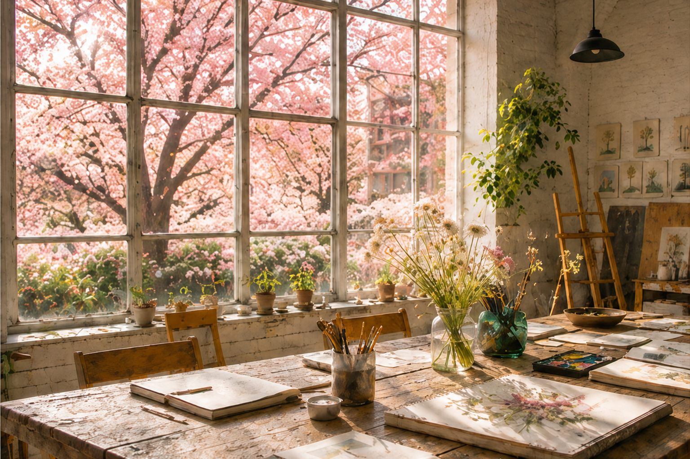

Home · Programs
PROGRAM COLLECTION
좋아하는 것을 발견하고, 계절과 그림을 삶 가까이에서 오래 이어가는 네 가지 경험을 제안합니다.
FOUR WAYS TO BEGIN
완성보다 발견을, 정답보다 각자의 감각을 소중히 여깁니다.
01 · SEASONAL

일상과 계절 속에서 마음이 가는 것을 발견하고그림과 짧은 기록으로 나만의 취향을 쌓아갑니다.
02 · ADULT DRAWING
처음이거나 오랜만이어도 괜찮습니다.사물을 바라보고 선과 색으로 천천히 표현합니다.
03 · ART CLASS
연령과 감각의 차이를 존중하며자신에게 맞는 재료와 표현 방법을 찾아갑니다.
04 · COMMUNITY
그림과 여행, 계절의 이야기를 사이에 두고함께 보고 만들며 새로운 이웃과 연결됩니다.
A BEAUTIFUL LIFE, ONE MOMENT AT A TIME